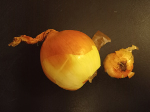
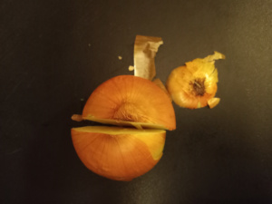
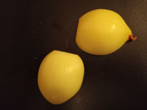
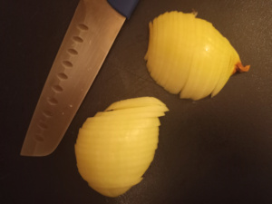

- Cut one end off an onion. I prefer to cut off the stem end, the one with the little hairs,
so that I don't end up with those hairs on my cutting board later.

- Place the cut side down on the cutting board and slice the onion through the middle to have
two equal pieces.

- Now peel the two halves.

- Repeat with all onions.
- Now, slice the onion halves into 1/8 inch half moons. As for the thickness of the slice, just aim
for 1/8 inch thick and go from there. It's fine if they are larger, just not too large, so
try to keep as many of the slices under 1/4 inch thick as you can. Just think of it as an exercise, you will get better and faster with practice.

Once you are comfortable with slicing the onions, you can speed things up by stopping at step 4
(after the peeling, but before the slicing). Add the oil to the pan and turn on the heat. Now, begin step 5 by slicing
3 onions, then throwing them in the pan, mixing to coat them in oil. Just repeat, 3 onions at a time, until
all the onions are in the pan. Then mix in the salt.